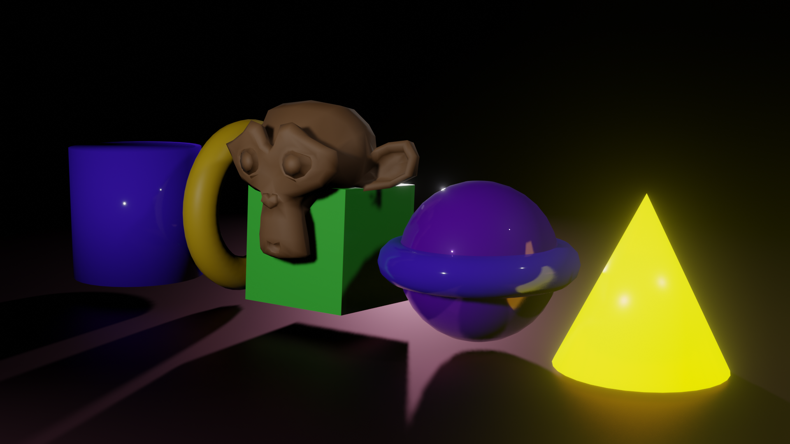
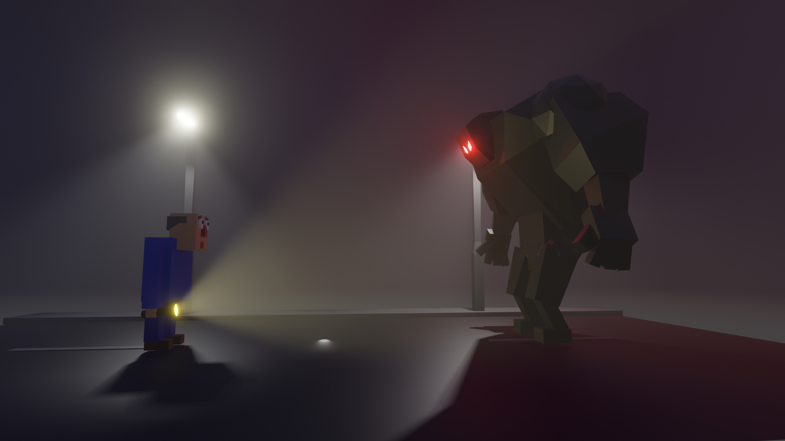
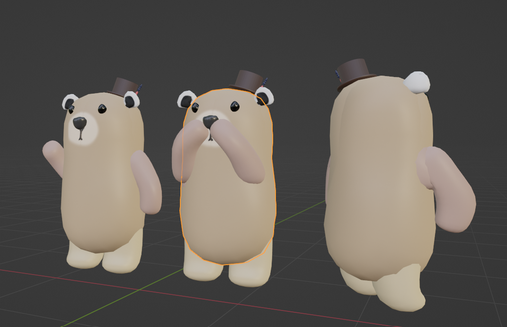
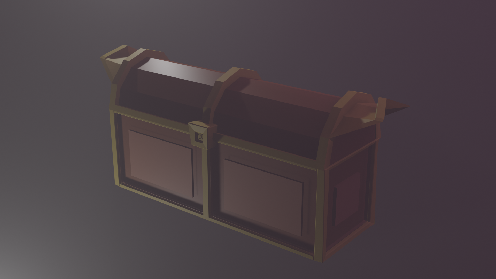

Studiumsprojekte
Im Grundstudium an der Fakultät Digitale Medien werden wir schon früh sehr breit im Medienbereich aufgestellt. So lernen wir die Welt der Betriebswirtschaft im 1.Semester durch ein fiktives Planspiel kennen. Dieses Wissen wird durch Medienökonomie und -marketing im 2.Semester ergänzt. Wir lernen Gestaltung, Konzeption und etwas über User Experience Design. In Entwicklung Interaktiver Anwendungen, lernen wir die Grundzüge des Codens und Programmierens, wodurch auch diese Website entstanden ist. Im Folgenden möchte ich zeigen, was wir bereits alles gemacht haben...

Entwicklung Interaktiver Anwendungen
Im ersten Semester haben wir viel über HTML und CSS gelernt.
Hier ein Anwendungsbeispiel (Carbon Dioxide)
Im zweiten Semester geht es hauptsächlich um Typescript. Hier haben wir ein kleines Memory programmiert:
Memory
AV-Produktion
Im Bereich der AV-Produktion haben wir verschiedene Praktika und Vorlesungen, die uns auf die Produktion eines ersten eigenen Kurzfilms vorbereiten sollen.
Computergrafik
In Computergrafik haben wir im 2. Semester begonnen die Grundlagen von Blender kennenzulernen.
   In der zweiten Semesterhälfte habe ich mit meiner Kommolitonin Ronja Burger sogar schon einen animierten Kurzfilm erstellen können: